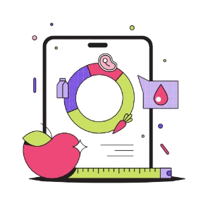
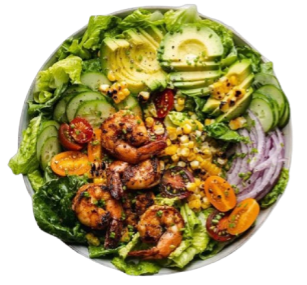
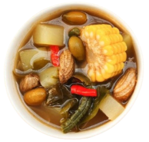
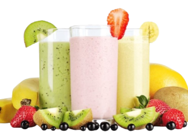
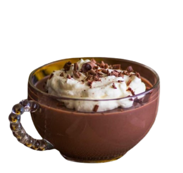

Create your journey and regulate your calorie intake

Introduction to
Calories
How it Works
Journey
Record each of yout food intake
BMI Calculator
Calculate daily calorie intake
Community
Sharing and consultation
Menu

Vegetable Salad
Vegetable salad is a dish of fresh vegetables sliced or cut into small pieces and served with various additional ingredients such as dressing, cheese, nuts, croutons, or additional protein such as shrimp, meat, chicken or fish.
Calory
Fat
Carb.
Protein
54
0,81g
12,5g
0,63g

Sayur Asem
Sayur Asem is a dish that is famous for its fresh sour taste. This dish consists of a mixture of fresh vegetables and special spices that provide a sour taste.
Calory
Fat
Carb.
Protein
80
2,76g
12,9g
3,18g

Smoothie Fruit
A fruit smoothie is a drink made from a mixture of fresh or frozen fruit, as well as other ingredients such as yogurt, milk, ice or honey.
Calory
Fat
Carb.
Protein
130
0,29g
33,52g
0,88g

Low Fat Pudding
Low fat foods can be a healthy alternative. One of them is low-fat pudding which replaces high-fat milk with low-fat or skim milk